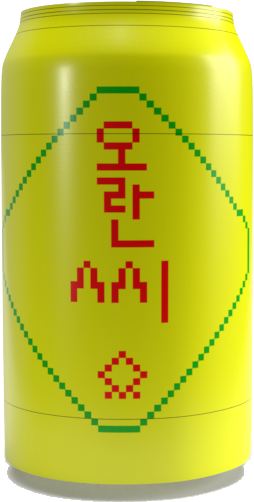

오란씨(O’Ranch)는 대한민국의 대표적인 탄산 음료 브랜드 중 하나입니다.
오란씨는 특히 오렌지 맛으로 유명하며, 상큼하고 달콤한 맛이 특징입니다.
이 음료는 주로 청량감과 시원함을 제공하여 더운 여름철에 인기가 많습니다.
오란씨는 다양한 맛으로도 제공되며, 오렌지 외에도 포도, 사과, 파인애플 등 여러 과일 맛이 있습니다.
이 브랜드는 1970년대에 처음 출시되어 오랜 시간 동안 많은 사람들에게 사랑받고 있습니다